IoC refers to the concept where a framework or automated system manages user-created objects on behalf of the developer.
In typical Java or other class-based OOPObject-Oriented Programming languages, developers must create objects by directly invoking constructors like below:
public class TheClass { ... }
public static void main(String[] args) {
TheClass object = new TheClass();
/* ... */
}However, in an IoC framework environment like Smoodi, the code looks quite different:
@Module
public class TheClass { ... }The key difference is the
With Smoodi, developers can mark classes with
As a result, there’s no need to call constructors manually—these objects become self-sufficient and behave according to their intended role.
The full process from creation to destruction of an object is known as the object lifecycle.
Smoodi manages this lifecycle on behalf of the developer.
Creation more precisely refers to instantiation, where a constructor is invoked and the object is allocated in the heap.
Destruction is more complex—it involves memory release, but in reality, the memory is freed only when the object is collected by the GCGarbage Collector. However, an object becomes unusable much earlier—specifically, when no references to it exist.
Therefore, in Smoodi, an object’s lifecycle spans from instantiation to the point when it is no longer referenced by any other object.
Now that we understand the concept of IoC, let’s look at the IoC Container itself.
An IoC Container is the component that actually implements IoC, acting as a manager and a storage system for framework-managed objects.
In Smoodi, applying IoC to an object is as simple as adding a
But how does that actually work?
This is where the IoC Container shines—it scans for classes annotated with
The core technology behind this process is the Reflection API.
To manipulate any object (i.e., an instance), the program must know its class definition.
To call a method or access a field, the code must reference the class and know its structure.
Languages like JavaScript are more flexible and don’t require type declarations when storing objects in
variables. Internally, objects behave like
But Java is quite different. Every variable must include type information, and to access object members, the program must use the class definition to locate them in memory.
In short, the code must always know and reference the class (or interface).
This characteristic of Java is known as being strongly-typed. While it ensures stability, it complicates dynamic class management.
To address this, Java provides the Reflection API.
Even if the type of an object is unknown at compile-time, you can retrieve its structured class information through simple method calls:
Object object = new AnyClass();
Class<?> classReflection = object.getClass();Elegant, isn’t it? Now you can access class metadata through Java objects themselves. For example:
// Print the class name
System.out.println(classReflection.getName());
// Even retrieve the constructors
Constructor<?>[] constructors = classReflection.getConstructors();
Smoodi uses the Reflection API to scan and manage annotated classes, implementing its IoC system automatically.
These scanned classes are instantiated and stored in the IoC Container.
The stored instances can then be reused to instantiate other classes—enabling DI (Dependency Injection).
IoC란, 사용자가 만든 객체를 프레임워크 같은 자동화된 도구가 대신 관리해주는 것을 말합니다.
아래와 같이, Java와 같은 Class 스타일의 OOPObject-Oriented Programming 언어는 프로그램을 만들기 위해 직접 생성자를 호출해 객체를 생성해야 합니다.
public class TheClass { ... }
public static void main(String[] args) {
TheClass object = new TheClass();
/* ... */
}하지만 IoC 프레임워크 환경에서는 조금 다릅니다. Smoodi를 예로 들면, 아래와 같이 코드를 적으면 됩니다.
@Module
public class TheClass { ... }가장 눈에 띄는 차이점은
Smoodi에서는
그 덕분에 다른 메소드에서 생성자를 호출할 필요도 없습니다. 심지어 능동적으로 자신의 역할에 맞게 동작합니다.
객체의 생성Create부터 파괴Destroy까지의 과정을 객체 생명주기Object Lifecycle라고 부릅니다. Smoodi는 사용자를 대신해 이 생명주기를 관리합니다.
객체의 생성이란 보다 정확히는, 인스턴스화instantiate를 의미합니다. 생성자가 호출되어, Heap 메모리에 객체가 등록되는 과정입니다.
파괴는 조금 더 복잡합니다. 메모리 해제를 의미하는데, 실제로 메모리가 해제되는 순간은 GCGarbage Collector에 의해 수집Collect되는 때입니다. 하지만 객체는 그보다 훨씬 전에 사용할 수 없게 됩니다. 바로 그 어느 곳에서도 참조하지 않는 시점입니다.
이제 Smoodi에서의 생명주기Lifecycle를 더 구체적으로 정의할 수 있습니다. 객체가 메모리를 할당 받는 순간부터, 다른 객체와의 상호작용이 정지할 때. 즉, 인스턴스화부터 객체에 대한 참조가 없을 때까지입니다.
IoC의 정의를 알았으니, 이제 IoC 컨테이너에 대해 알아볼 차례입니다.
IoC 컨테이너란 IoC를 실제로 구현하는 관리자이며, 동시에 프레임워크에 의해 관리받는 객체들을 저장하고 있는 저장소입니다.
어떠한 객체에 IoC를 적용하기 위해 Smoodi에서는
그것을 가능케하는 것이 IoC 컨테이너의 주된 역할입니다.
그리고 이 기술의 핵심은, Reflection API입니다.
어떠한 객체, 정확히는 인스턴스Instance 다루기 위해선 실제 코드에서 클래스에 대한 정보를 참조해야 합니다.
특정 메소드를 호출하거나 필드를 불러오려면 실제 클래스를 '코드 상에서' 참조해야 합니다.
Javascript처럼 타입에 관대한 언어는 객체를 변수에 저장할 때 타입을 명시하지 않습니다.
실제로 동작할 때엔 마치
하지만 Java는 조금, 아니 많이 다릅니다. 객체를 변수에 담으면, 그 변수는 꼭 타입 정보를 같이 가집니다. 그리고 객체의 구성 요소를 불러오려면 타입, 즉 클래스를 통해 무슨 구성 요소가 있는 지 확인하고, 그 후에 메모리에서 데이터를 가져옵니다.
간단히 말해, 코드에서 어쨌든 클래스(혹은 인터페이스)를 알고 있으며, 또 참조해야 합니다.
이러한 Java의 특징은 강타입Strongly-typed이라고 부릅니다. 이 성질 덕분에 높은 안정성을 보장할 수 있지만, 동적으로 여러 클래스를 관리해야 한다면 복잡해집니다.
이를 타개하고자 Java에선 Reflection API를 제공합니다.
객체의 타입에 대해 자세히 모르더라도, 간단한 메소드 호출을 통해 '정형화된 클래스 정보'를 얻을 수 있습니다.
Object object = new AnyClass();
Class<?> classReflection = object.getClass();아름답지 않나요? 이제 Class 정보를 Java 객체를 이용해 접근할 수 있습니다. 아래 코드처럼 말입니다.
// 클래스 이름을 출력하거나,
System.out.println(classReflection.getName());
// 심지어 생성자들을 불러올 수도 있죠!
Constructor<?>[] constructors = classReflection.getConstructors();
Smoodi에서는 이 Reflection API를 이용해 자동으로 클래스를 탐색해 IoC를 구현합니다.
그렇게 탐색한 클래스들은 인스턴스화되어 IoC Container에 저장됩니다.
저장된 인스턴스들은 다른 클래스를 인스턴스화하기 위해, 즉 DI를 위해서 사용되기도 합니다.